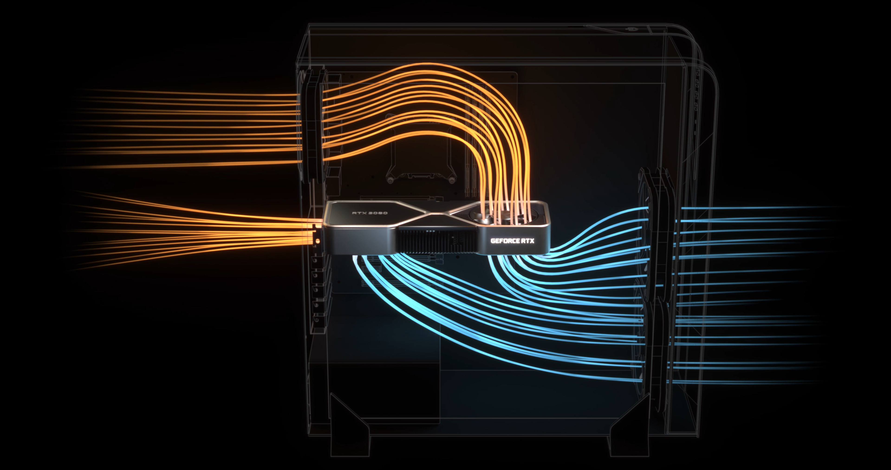
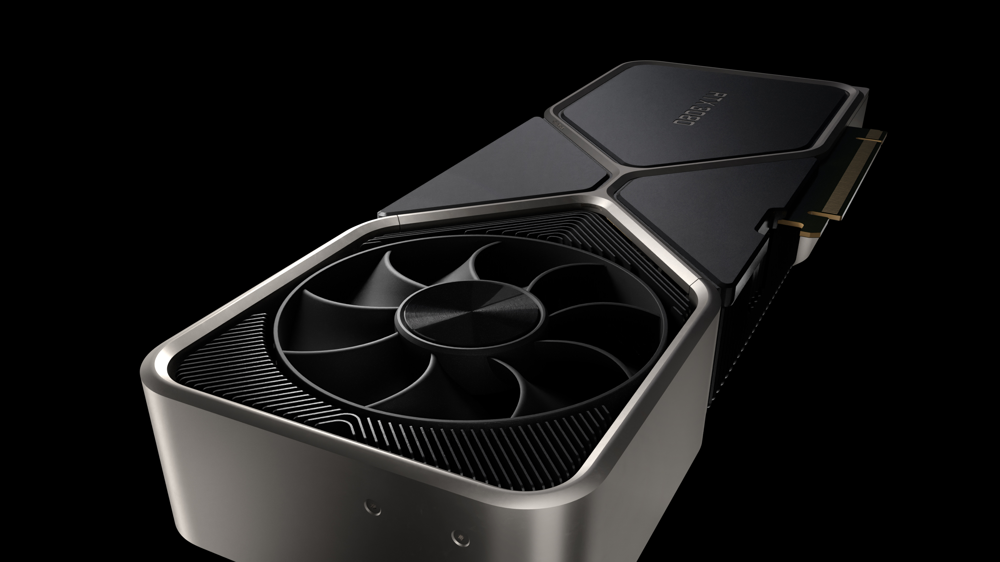
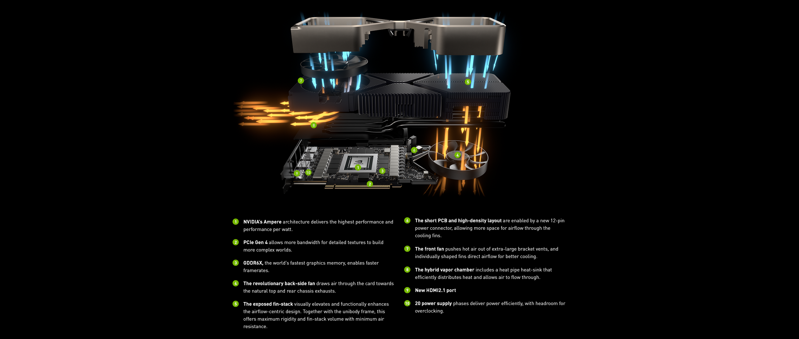
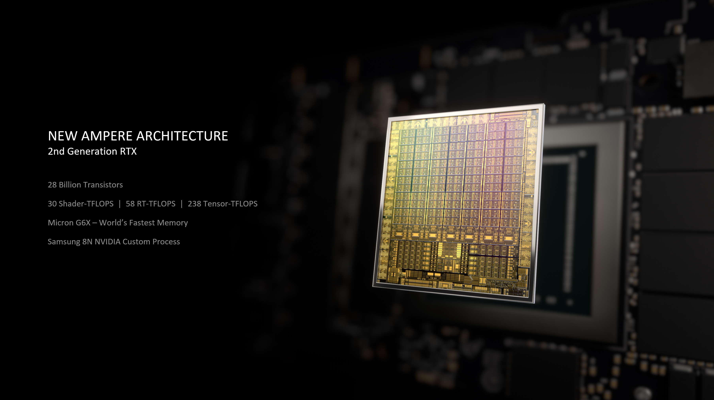
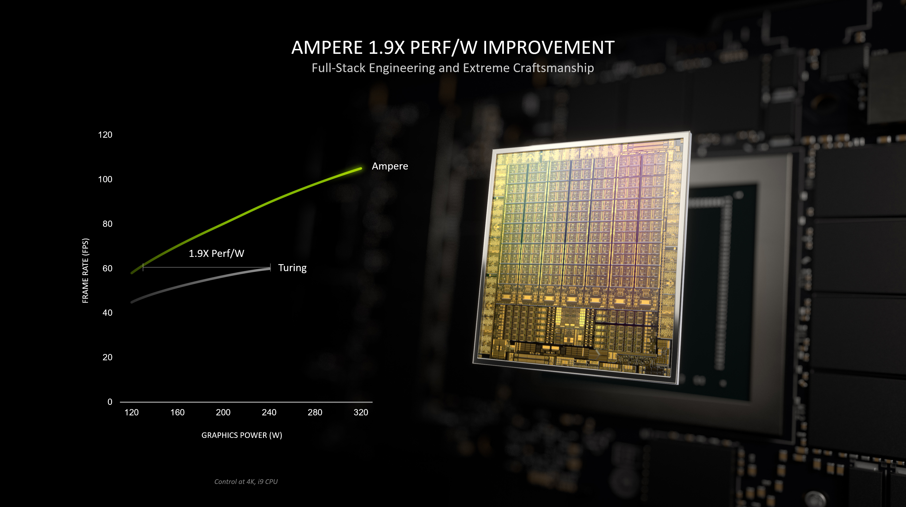

Видеокарты GeForce RTX 30 созданы на базе Ampere, архитектуры NVIDIA RTX нового поколения, и оснащены вторым поколением ядер для трассировки лучей, третьим поколением тензорных ядер и новыми потоковыми мультипроцессорами. Благодаря такой комбинации вы получаете более реалистичную графику, прирост FPS и поддержку технологий на базе ИИ для игр, стриминга и обработки графики и видео.
GeForce RTX 30 также стали первыми в мире игровыми видеокартами с объемом ультраскоростной видеопамяти GDDR6X до 24 ГБ, интерфейсом HDMI 2.1 для игр в 4K и 8K на дисплеях с высокой частотой обновления; первыми дискретными видеокартами с поддержкой кодека AV1 для просмотра стримов в высоком разрешении при значительно более низкой пропускной способности; а серия Founders Edition впервые получила инновационный кулер с двумя осевыми вентиляторами.
И, конечно, видеокарты GeForce RTX 30 оснащены новыми технологиями для киберспорта, стриминга, игр и работы с графикой и видео. Так, технология NVIDIA Reflex снижает задержку системы, обеспечивая мгновенную отзывчивость ПК для соревновательных игр; приложение NVIDIA Broadcast превращает ваш дом в студию для стриминга с инструментами для обработки видео и голоса на базе ИИ; обновленная NVIDIA DLSS позволяет играть в 8K HDR на GeForce RTX 3090; а оптимизации NVIDIA Studio ускоряют работу графических приложений.
С 17 сентября NVIDIA и наши партнеры-производители начнут выпускать GeForce RTX 3090, GeForce RTX 3080 и GeForce RTX 3070:
| GeForce RTX 3090 | GeForce RTX 3080 | GeForce RTX 3070 | |
|---|---|---|---|
| Ядра CUDA | 10,496 | 8,704 | 5,888 |
| Видеопамять | 24 ГБ GDDR6X | 10 ГБ GDDR6X | 8 ГБ GDDR6 |
| Цена от | 236 990 руб | 143 490 руб | 105 490 руб |
| Дата релиза | 24 сентября | 17 сентября | В продаже с октября |
Партнеры во всем мире, в том числе ASUS, Colorful, EVGA, Gainward, Galaxy, Gigabyte, Innovision 3D, MSI, Palit, PNY и Zotac, начнут продавать свои видеокарты наряду с моделями NVIDIA Founders Edition. При покупке видеокарт GeForce RTX 30 у участвующих в акции партнеров вы получите Watch Dogs: Legion в подарок. Подробности читайте здесь.
Видеокарты GeForce Founders Edition оснащены эффективной системой охлаждения и стильным дизайном, который отличает ваш игровой компьютер от ординарных ПК. Для серии GeForce RTX 30 мы разработали инновационный кулер с двумя осевыми вентиляторами. Один расположен на передней стороне слева, а второй, работающий на выдув, на обратной стороне справа (у GeForce RTX 3070 немного другая конструкция, оба вентилятора расположены в верхней части).
Так как тепло отводится от компонентов в гибридную испарительную камеру, оно распределяется по всей площади видеокарты и большого алюминиевого радиатора. Левый вентилятор выводит из корпуса нагретый радиатором воздух через вентиляционные отверстия карты, а правый выдувает его к выходным отверстиям корпуса.
Обычно печатные платы занимают всю длину видеокарты. Пришлось проявить фантазию, чтобы вместить полноразмерный вентилятор на обратной стороне видеокарты! Для этого наши инженеры разработали компактную печатную плату, уменьшили разъемы питания и NVLink, но смогли обеспечить 18 фаз питания для улучшенной подсистемы питания. Не волнуйтесь, переходник на стандартные разъемы блоков питания поставляется в комплекте с видеокартой Founders Edition.
Эти изменения также позволили освободить на печатной плате место размером с полноценный вентилятор и оставить больше пространства для прохождения воздушного потока.
Новая конструкция Founders Edition бесшумнее традиционных кулеров с двумя осевыми вентиляторами, но при этом почти в два раза эффективнее систем охлаждения предыдущего поколения. Упомянутые изменения конструкции питания и NVLink помогли обеспечить больше пространства для прохождения воздушного потока через самый большой на сегодня радиатор, а увеличенные отверстия и ребра оригинальной формы ускоряют движение воздуха. Куда бы вы ни посмотрели, каждая деталь видеокарт Founders Edition призвана увеличить воздушный поток, уменьшить нагрев и обеспечить самую высокую производительность при минимальном уровне шума.
Эти инновации позволяют обеспечить более высокую производительность без сопутствующего повышения температуры или шума по сравнению с решениями предыдущего поколения.
Молниеносная производительность новых видеокарт GeForce RTX 30 стала возможной благодаря комбинации передовых технологий и более чем двадцати годам работы в области игровой графики. Ниже мы рассмотрим ключевые моменты, а подробнее о них можно будет узнать 17 сентября в статье о GeForce RTX 30, где будут детально описаны все особенности новой видеокарты.
Потоковые мультипроцессоры лежат в основе видеокарт NVIDIA, и новые потоковые мультипроцессоры (SM) Ampere являются лучшими на настоящий момент. Для максимальной производительности новые потоковые мультипроцессоры выполняют в 2 раза больше FP32 операций, чем в GeForce RTX 2080 Ti с архитектурой Turing.
Как и для предыдущих поколений, мы также повысили энергоэффективность, чтобы обеспечить геймерам максимум FPS в играх. Благодаря поддержке PCIE 4.0, 18-фазному питанию и инновационному кулеру видеокарты GeForce RTX 30 ставят новые рекорды производительности даже без разгона.
